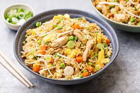

Chicken Fried Rice

Classic fried rice dish, simple to make with great results!
- Prep Time: 15 mins
- Cook Time: 45 mins
- Servings: 6
- Total Time: 1 hrs
Here's what you need:
- 2 cups uncooked white rice
- 1 tablespoon butter
- 2 skinless,bonless chicken breast halves- cubed
- 2 eggs, beaten
- 3/4 cup sliced mushrooms
- 2 green onions, chopped
- 1 tablespoon soy sauce, or to taste
- salt to taste
Directions
- In a saucepan bring 4 cups water to a boil. Add rice and stir. Reduce heat, cover and simmer for 20 minutes.
- Heat butter in a large skillet over medium-high heat. Brown chicken in butter and season with salt to taste. Set chicken aside.
- Transfer cooked rice to the skillet in which the chicken was cooked, stirring to brown.
- In a separate skillet, scramble eggs.
- To the rice add chicken, mushrooms, green onions, eggs and soy sauce to taste.